13.4 Distillation
Knowledge Distillation Tutorial
Created Date: 2025-06-23
Knowledge distillation is a technique that enables knowledge transfer from large, computationally expensive models to smaller ones without losing validity. This allows for deployment on less powerful hardware, making evaluation faster and more efficient.
In this tutorial, we will run a number of experiments focused at improving the accuracy of a lightweight neural network, using a more powerful network as a teacher. The computational cost and the speed of the lightweight network will remain unaffected, our intervention only focuses on its weights, not on its forward pass. Applications of this technology can be found in devices such as drones or mobile phones. In this tutorial, we do not use any external packages as everything we need is available in torch and torchvision.
You will learn:
How to modify model classes to extract hidden representations and use them for further calculations;
How to modify regular train loops in PyTorch to include additional losses on top of, for example, cross-entropy for classification;
How to improve the performance of lightweight models by using more complex models as teachers.
13.4.1 Prerequisites
# Check if the current `accelerator <https://pytorch.org/docs/stable/torch.html#accelerators>`
# is available, and if not, use the CPU
device = torch.accelerator.current_accelerator(
).type if torch.accelerator.is_available() else "cpu"
print(f'Using {device} device')Using mps device
13.4.2 Loading CIFAR-10
CIFAR-10 is a popular image dataset with ten classes. Our objective is to predict one of the following classes for each input image.
| airplane | 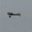 |
|||||||||
| automobile | ||||||||||
| bird | 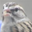 |
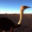 |
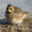 |
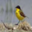 |
||||||
| cat | 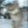 |
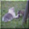 |
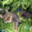 |
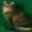 |
||||||
| deer | 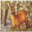 |
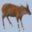 |
||||||||
| dog | ||||||||||
| frog | 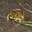 |
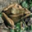 |
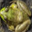 |
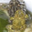 |
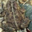 |
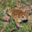 |
||||
| horse | 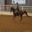 |
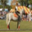 |
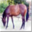 |
 |
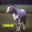 |
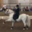 |
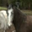 |
|||
| ship | ||||||||||
| truck | 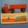 |
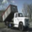 |
Figure 1 - The CIFAR-10 Dataset
The input images are RGB, so they have 3 channels and are 32x32 pixels. Basically, each image is described by 3 x 32 x 32 = 3072 numbers ranging from 0 to 255. A common practice in neural networks is to normalize the input, which is done for multiple reasons, including avoiding saturation in commonly used activation functions and increasing numerical stability. Our normalization process consists of subtracting the mean and dividing by the standard deviation along each channel.
The tensors \(mean=[0.485, 0.456, 0.406]\) and \(std=[0.229, 0.224, 0.225]\) were already computed, and they represent the mean and standard deviation of each channel in the predefined subset of CIFAR-10 intended to be the training set. Notice how we use these values for the test set as well, without recomputing the mean and standard deviation from scratch.
This is because the network was trained on features produced by subtracting and dividing the numbers above, and we want to maintain consistency. Furthermore, in real life, we would not be able to compute the mean and standard deviation of the test set since, under our assumptions, this data would not be accessible at that point.
As a closing point, we often refer to this held-out set as the validation set, and we use a separate set, called the test set, after optimizing a model’s performance on the validation set. This is done to avoid selecting a model based on the greedy and biased optimization of a single metric.
# Below we are preprocessing data for CIFAR-10. We use an arbitrary batch size of 128.
transforms_cifar = torchvision.transforms.Compose([
torchvision.transforms.ToTensor(),
torchvision.transforms.Normalize(
mean=[0.485, 0.456, 0.406], std=[0.229, 0.224, 0.225])
])
# Loading the CIFAR-10 dataset:
train_dataset = torchvision.datasets.CIFAR10(
root='./data', train=True, download=True, transform=transforms_cifar)
test_dataset = torchvision.datasets.CIFAR10(
root='./data', train=False, download=True, transform=transforms_cifar)13.4.3 Defining Model Classes and Utility Functions
We employ 2 functions to help us produce and evaluate the results on our original classification task. One function is called \(train\) and takes the following arguments:
model: A model instance to train (update its weights) via this function.train_loader: We defined ourtrain_loaderabove, and its job is to feed the data into the model.epochs: How many times we loop over the dataset.learning_rate: The learning rate determines how large our steps towards convergence should be. Too large or too small steps can be detrimental.device: Determines the device to run the workload on. Can be either CPU or GPU depending on availability.
Our test function is similar, but it will be invoked with test_loader to load images from the test set.

Train both networks with Cross-Entropy. The student will be used as a baseline:
For reproducibility, we need to set the torch manual seed. We train networks using different methods, so to compare them fairly, it makes sense to initialize the networks with the same weights. Start by training the teacher network using cross-entropy:
torch.manual_seed(42)
nn_deep = DeepNN(num_classes=10).to(device)
train(nn_deep, train_loader, epochs=10, learning_rate=0.001, device=device)
test_accuracy_deep = test(nn_deep, test_loader, device)
# Instantiate the lightweight network:
torch.manual_seed(42)
nn_light = LightNN(num_classes=10).to(device)Epoch [1/10], Loss: 1.3524 Epoch [2/10], Loss: 0.8909 Epoch [3/10], Loss: 0.6941 Epoch [4/10], Loss: 0.5536 Epoch [5/10], Loss: 0.4357 Epoch [6/10], Loss: 0.3340 Epoch [8/10], Loss: 0.1819 Epoch [9/10], Loss: 0.1522 Epoch [10/10], Loss: 0.1241 Accuracy of the model on the test set: 75.55%
13.4.4 Cross-Entropy Runs
14.4.5 Distillation Principle
13.4.5 Knowledge Distillation Run

13.4.6 Cosine Loss Minimization Run

13.4.7 Intermediate Regressor Run

13.4.8 Conclusion
None of the methods above increases the number of parameters for the network or inference time, so the performance increase comes at the little cost of calculating gradients during training. In ML applications, we mostly care about inference time because training happens before the model deployment. If our lightweight model is still too heavy for deployment, we can apply different ideas, such as post-training quantization.
Additional losses can be applied in many tasks, not just classification, and you can experiment with quantities like coefficients, temperature, or number of neurons. Feel free to tune any numbers in the tutorial above, but keep in mind, if you change the number of neurons / filters chances are a shape mismatch might occur.